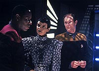
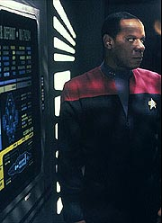
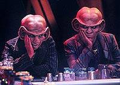
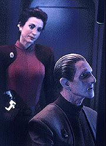
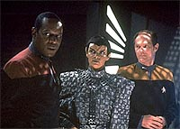

MANCHETE
DO EPISDIO
Busca
pelos Fundadores e pela origem
de Odo trazem ao e aventura srie
Episdio
anterior | Prximo
episdio
Sinopse:
Data Estelar: 48212.4.
Uma reunio estratgica entre
Kira, Dax, Odo, Bashir e O'Brien no OPS (Centro de Operaes de
DS9) interrompida quando uma nave estelar da Federao se
descamufla, j dentro do permetro de segurana da estao.
Sisko, a bordo da tal nave, avisa que trouxe uma surpresinha para
o Dominion. Mais tarde, Sisko explica que a Defiant um prottipo
de nave de guerra da Frota Estelar, desenvolvida com o propsito
de lutar contra os Borgs. A misso de Sisko levar a Defiant
para o quadrante Gama atravs da fenda espacial e tentar
estabelecer algum tipo de relao diplomtica com os Fundadores
do Dominion.
Para poder realizar a tarefa, a nave est equipada com um
dispositivo de camuflagem emprestado pelo governo Romulano em
troca de quaisquer informaes obtidas sobre a potncia do
quadrante Gama. A Romulana T'Rul foi designada a operar o
dispositivo de camuflagem. A Frota Estelar tambm enviou o
tenente-comandante Michael Eddington para tomar conta dos assuntos
de segurana da Frota em DS9 de agora em diante. Odo fica furioso
com isso e avisa a Sisko que vai pedir demisso.
Ben e Jake conversam e ambos admitem finalmente aceitar DS9 como o
seu verdadeiro lar. Um desolado Odo observa as estrelas no
Promenade, Kira se aproxima e diz ter "mexidos uns
pauzinhos" com o governo Bajoriano para que o comissrio faa
parte da misso na condio de representante de Bajor. Odo diz
a Kira que "valeu a inteno" e parte. Sisko convence
Quark a ajud-lo a contatar os Fundadores do Dominion atravs
dos Karemmas, uma raa com quem ele j havia negociado antes.

A
Defiant parte com todos, exceo de Jake. Odo o ltimo a
embarcar, solicitando permisso para vir a bordo usando a cartada
que Kira lhe ofereceu anteriormente, para manter a sua dignidade
pessoal. Odo e Quark dividem o mesmo quarto a bordo da Defiant. J
no quadrante Gama, as atividades das patrulhas Jem'Hadares parecem
indicar que o dispositivo de camuflagem pode no ser to
eficiente quanto Sisko e Cia. gostariam que fosse.
Em rbita do mundo natal dos Karemmas, um negociante de nome
Ornithar diz que toda comunicao deles com o Dominion passa por
uma certa estao retransmissora (ele diz no saber nem se os
Fundadores existem ou no e que eles negociam com o Dominion
atravs dos Vortas). Ele indica o
local em um mapa estelar e Odo fica fascinado por uma nebulosa
nesse mesmo mapa. Quark decide ficar para trs e voltar a DS9 por
seus prprios meios.
Kira fala com Sisko e demonstra total desprezo pelas atitudes da
Frota Estelar com relao a Odo. Sisko no discorda de nada que
a major fala, mas diz que para Odo ficar ele tem que querer ficar.
A Defiant chega tal estao retransmissora, O'Brien e Dax de
transportam e so presos pelos soldados Jem'Hadares. Sisko decide
deixar os dois para trs e parte, com a chegada de mais uma
patrulha de naves, seguindo as coordenadas enviadas por Dax.
Kira vai conversar com Odo e o comissrio se diz
irresistivelmente atrado por um planeta na nebulosa Omarion e
quer tomar uma nave auxiliar e partir. Os Jem'Hadares atacam e
apesar de a Defiant conseguir destruir uma das naves inimigas, os
escudos caem e os soldados abordam a nave.

A
tripulao luta bravamente em uma disputa sem chance de vitria.
Odo e Kira lutam nos decks inferiores e a major cai inconsciente.
Odo consegue de alguma forma se livrar dos Jem'Hadares e arrastar
Kira para uma nave auxiliar, com o objetivo de partir para um
planeta errante na nebulosa Omarion. Ele diz a Kira que a ltima
imagem que viu da Defiant foi a de uma nave deriva cercada por
naves Jem'Hadares e que ele no tem noo do que aconteceu com
Sisko e os demais. Chegando ao planeta, Kira e Odo avistam um
enorme lago dourado, e dele emergem formas de vida idnticas a
Odo. Uma fmea diz "bem vindo ao lar" para o comissrio.
Continua...
Comentrios:
Deep Space Nine abre a sua terceira temporada com um
ambicioso episdio que introduz a nave estelar Defiant,
estabelece o tom de desenvolvimento que ser dado a Ben Sisko
durante toda a temporada, mostra uma imediata reao da Frota
Estelar ameaa do Dominion e apresenta a espcie de Odo. O
episdio cai na categoria de ao/aventura e nesses termos
funciona muito bem, contando com excelentes valores de produo
e extrema confiana em sua execuo. Saibam mais detalhes, sem
precisar fazer nenhuma "busca" no processo, nas linhas
abaixo.

A
misso de Sisko com a Defiant, como resposta da Frota Estelar
ameaa do Dominion, foi adequada e oportuna. A obteno do
dispositivo de camuflagem com os Romulanos e a deciso de tentar
contatar os Fundadores atravs dos Karemmas (boa continuidade com
relao a "Rules
of Acquisition") soam como medidas bastante razoveis
tambm.
(Os dilogos de Ornithor indicam que os produtores j tinham em
mente a hierarquia do Dominion: Jem'Hadares, Vortas e Fundadores.)
A histria pregressa da Defiant e suas caractersticas especiais
a estabelecem claramente como "a nave de DS9". O
fato de Sisko e a nave terem um passado em comum s enriquece a srie
(alm de fazer sentido de forma inatacvel). As cenas entre Ben
e Jake e Ben e Jadzia no so nada sutis, mas funcionam
admiravelmente bem para estabelecer o arco de Sisko durante a
temporada. Sisko trabalha muito bem a situao com Quark (outro
com excelente participao --apesar de achar que o beijo no
cetro do Nagus tenha sido "um pouco demais") e depois
com Ornithor, e demonstra real sensibilidade no caso de Odo
(inclusive na cena com Kira). Um belo episdio para o comandante
de DS9 (ainda que o estabelecimento dos temas do personagem para
esta temporada tenha se dado de uma forma "meio"
abrupta).

Falhas
de segurana em DS9 e o descontentamento da Frota com Odo j
foram estabelecidos antes, por exemplo, em "The
Maquis". Uma medida mais incisiva do comando, no caso
a designao de Eddington, era mais do que esperada. Em "Necessary
Evil" tivemos estabelecida a bvia incompatibilidade
de Odo com os mtodos da Frota, bem como o fato de ele se definir
pelo seu trabalho. Com a perda do seu trabalho, Odo teria que
reagir de maneira muito forte. Olhar as estrelas do Promenade aps
pedir demisso foi o melhor retrato disto.
Odo demonstrou, na maioria de suas cenas, extremo ressentimento e
mesmo raiva, chegando ao pico na cena com Quark. Nada disso soou
falso, mas certos momentos foram de fato "pra l de
over". Entretanto o fato de um personagem regular de uma srie
de Jornada colocar a sua agenda pessoal acima da dos outros
to atpico que por si s interessante. A sua distante
descrio do destino da Defiant e de sua tripulao s
contribuiu para tal efeito. O corte entre o desmaio de Kira e ela
acordando na nave auxiliar foi muito interessante. No vejo
problema com Odo "limpando o cho" com alguns soldados
Jem'Hadares fora de tela.
(Estas oscilaes nas "vozes" de alguns personagens,
notadamente na "fria" de Odo e na "paixo"
de Sisko, podem ser atribudas ao fato de termos um roteirista
escrevendo pela primeira vez na srie, no caso Ronald D. Moore.)
Kira foi uma pessoa bastante razovel e ps no cho como
sempre, tanto no trato direto com Odo quanto no trato indireto da
situo do comissrio atravs de Sisko. A paixo da major
sempre latente e desta vez ela at pediu permisso para falar
livremente com o comandante (!). A participao de O'Brien e
Bashir foi bastante pequena no episdio. Ironicamente foi o bom
doutor que acabou pilotando a Defiant durante a batalha.

A
direo de Friedman foi impecvel. A utilizao de saltos com
closes extremos empreendeu uma qualidade quase que cinematogrfica
ao episdio, especialmente nas cenas envolvendo a Defiant sob
camuflagem (com extrema claustrofobia e tenso). A diretora
orquestrou uma das mais sensacionais seqncias de ao da srie
e do franchise quando do ataque dos Jem'Hadares Defiant, com
tudo funcionando perfeitamente desde a fotografia de Jonathan West
at a trilha sonora de Jay Chattaway (muito mais bombstica do
que de costume nas sries modernas de Jornada).
A equipe de efeitos visuais realmente mereceu o pagamento esta
semana, desde a sempre trabalhosa iluminao do nome da Defiant
(um raro presente para uma audincia de TV) at a descoberta da
espcie de Odo (com direito primeira viso do "Grande
Elo", ou "Great Link", na srie), tudo funcionou
em conceito e execuo. Bravo! (Isso tudo sem falar nos feisers
da Defiant!)
O elenco regular esteve bastante slido, talvez com exceo das
cenas iniciais de El Fadil (um pouco desligado) e de certos
trechos do material de Farrell (na ponte da Defiant, quando ela
avisa a Sisko sobre a condio de Quark, por exemplo). Visitor e
Lofton estiveram bem como usual e Shimerman foi particularmente
feliz com as suas escolhas aqui. Brooks no errou uma acentuao
sequer e foi uma presena bastante forte e segura no episdio. O
destaque, claro, vai para Auberjonois, por saber combinar to
bem indignao, orgulho, raiva, solido, felicidade, medo etc.
ao longo do episdio. E por trazer tudo isso tona, ao mesmo
tempo, quando encontrou o seu povo. Realmente indescritvel a
expresso da face de Odo.
Dentre os atores convidados, Hackett e Marshall foram timos no
pouco que foi pedido deles. Fleck foi bastante interessante (e
mesmo engraado) como Ornithar, mas Salome Jens fica com o
destaque, mesmo tendo dito uma nica frase.
Dax sugere no "teaser" do episdio que as duas nicas
alternativas tticas frente a uma potencial invaso do Dominion
seriam abandonar a estao e estabelecer uma posio defensiva
em Bajor ou colapsar a entrada da fenda espacial. Bom sinal.
Felizmente Sisko e cia. foram mantidos bem atrs em termos tticos
com relao ao Dominion. Do que adianta introduzir uma grande
ameaa Federao se no episdio seguinte ela j est
sendo explodida com um bocado de "tecnobaboseira" ou
similar?
(Lamento informar que a Defiant ir fazer mais misses com todos
os oficiais graduados a bordo ao longo da srie. No que isto faa
algum sentido, estou apenas avisando.)
Uma pergunta razovel por que o dispositivo de camuflagem da
Defiant teve que ser Romulano. No poderia ter sido dos aliados
Klingons? No existe explicao cannica para isto. Uma
racionalizao que bastante popular entre os fs de que o
tratado firmado entre a Federao e o Imprio Romulano que
impede que a Federao desenvolva o dispositivo de camuflagem
deve determinar tambm que em situaes especiais e de
interesse mtuo, naves da Federao possam utilizar
dispositivos de camuflagem Romulanos e somente Romulanos. Em uma
nota relacionada, felizmente no foi adotada para a Defiant a
camuflagem "interfsica" de "The Pegasus",
da stima temporada de A Nova Gerao, uma tremenda
"caixa de vermes" que fica melhor fechada.
Por que somente T'Rul usou a sua arma de mo quando da abordagem
dos Jem'Hadares? Seria errado Sisko deixar a ponte no momento de
crise para ir falar com Odo e foi errado ele permitir que Kira
fosse faz-lo. No havia outro modo de nossos heris obterem a
informao na estao de retransmisso (com uma sonda-rob
ou uma conexo remota talvez) sem ter que mandar Dax e O'Brien l
para baixo? Como os sensores da Defiant no detectaram a presena
dos Jem'Hadar na estao? Sisko no deveria ter desconfiado de
que as coordenadas enviadas por Dax poderiam levar a uma
emboscada?
"The Search, Part I" traz de volta DS9 em
grande estilo, dentro da escola de ao/aventura, estabelecendo
de forma direta ou indireta alguns dos principais temas e
objetivos criativos da temporada. A descoberta da espcie de Odo
foi uma manobra extremamente corajosa dos produtores e que ir
modificar para sempre o personagem. O final do episdio faz um
bom trabalho em "espalhar" os personagens, abrindo
interessantes perspectivas para a sua continuao. Um excelente
comeo!
Citaes
Sisko - "When did I
start thinking of this... Cardassian monstruosity... as
home?"
("Quando eu comecei a pensar nessa... monstruosidade
Cardassiana... como um lar?")
Kira - "Can I speak freely? What the HELL is wrong with
Starfleet?"
("Posso falar livremente? Que DIABOS acontece com a Frota
Estelar?")
Kira - "I'm your friend --you know, the one who talks to
you when she needs help."
("Eu sou sua amiga --sabe, aquela que fala com voc quando
ela precisa de ajuda.")
Odo - "Ever since we've come into the Gamma quadrant I've
had this feeling of being drawn somewhere --pulled by some
instinct to a specific place..."
("Desde que entramos no quadrante Gama eu tenho essa sensao
de ser atrado para algum lugar --puxado por algum instinto para
um lugar especfico...")
Fundadora - "Welcome home."
("Bem-vindo ao lar.")
Trivia:
 Salome Jens j havia aparecido antes em Jornada no episdio
"The Chase", da sexta temporada de A Nova Gerao.
A Fundadora (que ser referida assim nesse guia de episdios,
pois nunca teve um nome estabelecido em tela) se torna uma
personagem recorrente at o ltimo episdio de DS9.
Salome Jens j havia aparecido antes em Jornada no episdio
"The Chase", da sexta temporada de A Nova Gerao.
A Fundadora (que ser referida assim nesse guia de episdios,
pois nunca teve um nome estabelecido em tela) se torna uma
personagem recorrente at o ltimo episdio de DS9.
Martha Hackett no participou mais de DS9 (assim como o
"novo" penteado de Terry Farrell), aps o duplo "The
Search", ficando com o caminho livre para interpretar
Seska em Voyager.
John Fleck voltaria a parecer como o Romulano Koval, chefe da Tal
Shiar, no episdio "Inter Arma Enim Silent Leges",
da stima temporada de DS9. Ele j havia participado do
episdio "The Mind's Eye", da quarta temporada
de A Nova Gerao, como Taibak, e depois viria a
participar de Voyager no episdio "Alice",
da sexta temporada, como Abaddon. Fleck agora bem conhecido dos
fs de Enterprise como Silik.
Kenneth Marshall continuou a aparecer em DS9, com o seu
Michael Eddington. Marshall conhecido dos fs do gnero
sci-fi pela sua participao no filme "Krull" (1983),
no papel do prncipe Colwyn.
A tomada que a diretora Kim Friedman mais gostou foi aquela em que
Odo observa o "Great Link" pela primeira vez, com uma
fascinante combinao de emoes no rosto de Ren
Auberjonois. Friedman diz que filmar na ponte da Defiant
inicialmente foi muito difcil. Com o tempo o cenrio foi
modificado, facilitando o trabalho dos posteriores diretores.
Um detalhe curioso que, apesar de terem brigado um bocado para
ter um dispositivo de camuflagem na Defiant, os produtores no
tinham certeza se iriam utiliz-lo novamente no curso da srie.
Grande parte da iluminao necessria a fotografia das cenas
construda nos prprios cenrios. O cinegrafista Jonathan West
recebeu a informao inicial de que o "estilo de iluminao
enquanto camuflada" seria s para "The Search",
da ele no incluiu o equipamento fixo no cenrio para tal
efeito e fez uma adaptao especfica no episdio. Obviamente
a Defiant continuou se camuflando durante srie e West teve
sempre de comear do zero para acertar esse particular efeito em
cada uma das vezes em que ele foi necessrio.
O consultor cientfico da srie, Andre Bormanis, diz que a existncia
de um planeta errante, como o da raa do Odo, est "no
limite da credibilidade", mas ele afirma que tal planeta
poderia desenvolver vida. O curioso que a srie Enterprise
tambm figurou um episdio ("Rogue
Planet") sobre um planeta errante habitado por uma raa
de transmorfos. Aparentemente Bormanis, agora um roteirista em Enterprise,
tem fixao no assunto.
Por uma dessas "coisas da vida" a imagem no cetro do
Grande Nagus (feito para o episdio "The
Nagus", da primeira temporada) no foi baseada na
imagem de Zek, mas sim na de Quark.
Em uma tarefa herclea, os produtores da srie conseguiram espao
fsico e dinheiro para construir todos os cenrios tpicos de
uma nave estelar para a Defiant. Em "The Search"
temos apenas a ponte, um corredor e um dos pequenos alojamentos da
tripulao. A engenharia s ser vista em "The
Adversary", que termina essa terceira temporada.
Ficha
tcnica:
Histria de Ira Steven Behr
& Robert Hewitt Wolfe
Roteiro de Ronald D. Moore
Direo de Kim Friedman
Exibido em 26/09/1994
Produo: 047
Elenco:
Avery Brooks como
Benjamin Lafayette Sisko
Ren Auberjonois como Odo
Nana Visitor como Kira Nerys
Colm Meaney como Miles Edward O'Brien
Siddig El Fadil como Julian Subatoi Bashir
Armin Shimerman como Quark
Terry Farrell como Jadzia Dax
Cirroc Lofton como Jake Sisko
Elenco convidado:
Salome Jens como
A Fundadora
Martha Hackett como T'Rul
John Fleck como Ornithar
Kenneth Marshall como Michael Eddington